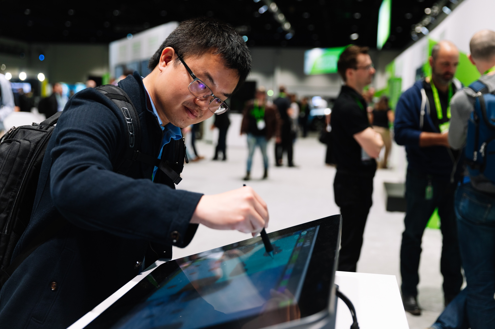

|

|
I am a Distinguished Research Scientist and a Director of Research at NVIDIA. My research focus is on deep generative models and their applications. I want to enable machine super-human imagination capability so that they can better assist us in creating content and expressing ourselves. I like to put my research into people’s hands. NVIDIA Canvas/GauGAN and NVIDIA Maxine are two products enabled by my research. I consider making the research community better part of my mission. I frequently serve as an area chair for various top-tier AI conferences, including NeurIPS, ICML, ICLR, CVPR, ICCV, and ECCV, as well as organize tutorials and workshops in my field. Empowered by many, I have won several major awards in my field, including winning the SIGGRAPH Best-in-Show Award two times.
Prior to NIVIDA, I was a Principal Research Scientist with Mitsubishi Electric Research Laboratories (MERL). I received my Ph.D. degree from the University of Maryland, College Park, MD, USA, in 2012, advised by Prof. Rama Chellappa.


|